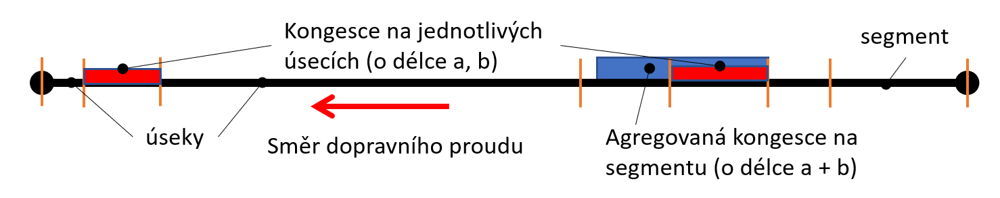
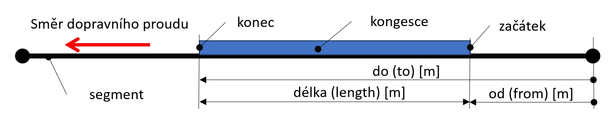

Koncepty¶
Tato kapitola popisuje základní koncepce, používané v tomto formátu. Včetně popisu jednotlivých elementů a jejich významu. Podrobná definice je uvedena také ve schématech. Dále tato kapitola uvádí krátké ukázky ze skutečných XML dokumentů. Více ukázek viz Příloha A: Příklady zpráv.
Popisovaný formát umožňuje poskytování informací získaných z FCD. Jedná se o dojezdové doby, rychlost dopravního proudu, stupně dopravní zátěže a odhad délky a polohy kolon na sadě předem definovaných tras, rozlišené podle typu vozidel na informace pro nákladní a pro osobní automobily.
Části XML dokumentu¶
XML dokument staví na následujících elementech a částech:
DOC (kořen dokumentu)
INF (metadata)
FCD (kontejner pro data o stavech na segmentu)
SEGMENT (stavy na segmentu)
Na rozdíl od původní verze formátu x-format:cz-ndic_ddr-fcd-v1.0 zavádí do popisu strukturu, přejmenovává některé elementy a atributy a upravuje jejich význam.
Kořen dokumentu (DOC)¶
Element DOC představuje jednotlivou publikaci (jednu instanci přenášených dat).
Atribut xmlns odkazuje na použitou verzi schématu.
Atribut created uvádí čas, kdy byla daná publikace, jako celek, vytvořena ve formátu dateTime.
1<?xml version="1.0" encoding="UTF-8"?>
2<DOC xmlns="x-format:cz-ndic_ddr-fcd-v2.0" created="2023-01-23T18:28:18+01:00">
Metadata (INF)¶
Element INF popisuje meta-informace o celé publikaci, konkrétně v sub-elementu DAT/D2PLS uvádí referenci na publikaci DATEX II obsahující popis poloh daných segmentů.
1 <INF>
2 <DAT>
3 <D2PLS uri="x-source:cz-ndic_d2-pls-fcd"/>
4 </DAT>
5 </INF>
Kontejner pro data o stavech (FCD)¶
Jednotlivé stavy segmentů jsou umístěny do jednoho společného rodičovského elementu FCD. Tento element obsahuje informace o těch segmentech, z celkového počtu segmentů, na kterých jsou či v nedávné době byly přítomny vozidlové sondy.
Nedávná doba je nyní nastavena jako T-5 minuty, T je čas vytvoření dané publikace.
Segmenty, na kterých nejsou či v nedávné době nebyly přítomny vozidlové sondy, nejsou v uvedeny.
Stav na segmentu (SEGMENT)¶
Dopravní situace na segmentu je popsána sub-elementy elementu SEGMENT:
element ALL obsahuje hodnoty/stavy bez rozlišení typů vozidel, přítomen vždy.
elementy CAR a TRUCK obsahují hodnoty/stavy pro osobní vozidla, resp. nákladní vozidla.
Elementy SEGMENT rozlišujeme (pouze dle obsahu, ne atributem) na:
segmenty se sdruženým dopravním proudem, kde nemá smysl vyhodnocovat dopravní parametry odděleně podle typu vozidel, tj. vozidla se pohybují smíšeně či v jednom jízdním pruhu. Pro tyto segmenty je uveden pouze element ALL.
segmenty s odděleným dopravním proudem, kde má smysl vyhodnocovat dopravní parametry odděleně podle typu vozidel, tj. vozidla se pohybují odděleně, ve více pruzích, a mohou vznikat oddělené kolony vozidel podle jejich typu. Pro tyto segmenty je uveden element ALL a jeden či oba elementy CAR a TRUCK podle toho, zda se na segmentu v době vyhodnocení daný typ vozidel vyskytoval.
Identita a verze segmentu a čas¶
Identita stavu na segmentu (SEGMENT) je jednoznačně určena jeho polohou (daná identifikátorem polohy z D2PLS a její verzí) a časem výpočtu hodnot.
10 <SEGMENT id="TS42739T17195" version="1" last_updated="2023-01-23T18:26:06+01:00">
Atribut id uvádí identitu segmentu, odkazují do publikace předdefinovaných poloh uvedených v meta datech viz Metadata (INF) na záznam se stejným id (a verzí).
Poznámka
Popis poloh se může v čase vyvíjet, proto se může v polohové publikaci vyskytnout více položek se stejným identifikátorem, lišící se jejich verzí.
Atribut version uvádí verzi daného polohového popisu, společně s hodnotou v id tvoří unikátní odkaz do sady předdefinovaných poloh.
Atribut last_updated uvádí čas pro který jsou data vypočtena, tj. poslední okamžik, kdy byly pro SEGMENT vypočteny (a aktualizovány) hodnoty. K aktualizaci dochází pravidelně v intervalu 1 minuty, kdy se vyhodnocují trasy všech vozidel na sledované síti a jimi projeté úseky (části segmentu) a hodnoty k takto projetým úsekům. K poslední aktualizaci stavu segmentu dojde, když jej opustí poslední vozidlo.
Segmenty jejichž poslední aktualizace proběhla před více než 5 minutami nejsou do celkového přehledu zahrnuty (nejsou aktuální).
Hodnoty bez rozlišení typů vozidel (ALL)¶
Element ALL obsahuje vypočítané hodnoty na segmentu pro všechna vozidla bez rozlišení typu a element popisující kolonu na segmentu (CONGESTION) pokud je přítomna.
11 <ALL count="1" speed="41" travel_time="30" delay="5" freeflow_speed="50" freeflow_time="25" reliability="0.500" traffic_level="2"/>
Poznámka
Následující atributy jsou vždy pro všechna vozidla na daném segmentu bez rozlišení typu.
Atribut count udává počet vozidel použitých pro výpočet hodnot (bez rozlišení typu).
Atribut speed udává aktuální rychlost dopravního proudu [km/h]. Vypočtenou jako průměrná rychlost vozidel, které se na segmentu vyskytují.
Atribut travel_time udává aktuální dojezdovou dobu [s]. Informace o aktuálním čase průjezdu je vypočtená z „délka segmentu/průměrná rychlost na segmentu“.
Atribut delay udává zpoždění [s]. Informace o zdržení je vypočtená z „čas průjezdu volného segmentu – aktuální čas průjezdu“.
Atribut freeflow_speed udává rychlost volného průjezdu [km/h]. Historická hodnota rychlosti volného průjezdu agregovaná přes všechna období.
Atribut freeflow_time udává dobu volného průjezdu [s]. Historická hodnota vypočtena jako délka segmentu/rychlost volného průjezdu.
Poznámka
Délku celého segmentu lze vypočíst z hodnot freeflow_speed a freeflow_time elementu ALL, který je vždy přítomen, či zjistit z publikace sady předdefinovaných poloh.
Atribut reliability udává spolehlivost dat, která charakterizuje kvalitu datového vzorku [%]. Nabývá hodnot <0-1> kdy 1 znamená 100 % spolehlivá data. Hodnota je závislá pouze na počtu vozidel na segmentu, základní hodnota je 50 % pro 1 vozidlo na segmentu, s více vozidly na segmentu asymptoticky stoupá ke 100 %. Hodnotu spolehlivosti lze tedy vždy dopočíst ze znalosti počtu vozidel na segmentu.
Atribut traffic_level udává stupeň dopravy dle zvyklostí v ČR [-]. Zde vypočítané z % rozdílu aktuální rychlosti dopravního proudu a rychlosti dopravního proudu na volném segmentu.
Stupeň |
Popis |
% rozdílu |
|---|---|---|
1 |
provoz pouze jednotlivých vozidel, jízda je plynulá |
<85 %, 100 %) |
2 |
provoz malých skupinek vozidel, jízda je plynulá, odbavování na křižovatkách bez problémů |
<75 %, 85 %) |
3 |
tvoří se proudy vozidel, provoz je plynulý, avšak rychlost nižší než maximální povolená |
<50 %, 75 %) |
4 |
tvoří se kolony vozidel, provoz není plynulý, průměrná rychlost je výrazně snížená, průjezd křižovatkami je narušen |
<20 %, 50 %) |
5 |
dopravní kolaps – vozidla na komunikacích stojí nebo v kolonách jen velmi pomalu popojíždějí, průměrná rychlost je velmi malá |
<0 %, 20 %) |
Kongesce na segmentu (CONGESTION)¶
Segmenty jsou interně děleny na menší části (úseky silniční sítě Global Network, GN). Přítomnost kongesce se vyhodnocuje vůči úsekům GN jako pokles rychlosti průjezdu tohoto úseku pod 30 % rychlosti volného průjezdu.
Poznámka
V publikaci se rozlišuje je-li kongesce generována osobními či nákladními vozidly. V elementu ALL jsou hodnoty vypočteny ze všech vozidel, zatímco v elementech CAR a TRUCK pouze z vozidel daného typu.
Element CONGESION obsahuje agregované hodnoty z jednotlivých úseků segmentu na kterých byla vyhodnocena kongesce. Pokud na žádném z úseků segmentu nebyla vyhodnocena element CONGESION není přítomen. Element je přítomen pouze jedenkrát za segment, tomu jsou uzpůsobeny hodnoty jeho atributů (více viz popis atributů a obrázek níže).

Poznámka
Na segmentu se může nacházet kongesce i když je aktuální rychlost na celém segmentu porovnatelná či vyšší než rychlost průjezdu volným segmentem, může se jednat například o kongesci na krátkém úseku před křižovatkou.
16 <CONGESTION from="98" length="171"/>
Atribut from udává začátek kongesce [m] měřeno od počátku segmentu ve směru dopravního proudu. V případě více rozdělených kongescí na segmentu, například kolona detekovaná na 1. a 3. úseku GN atribut from udává pouze informaci o 1. koloně.

Atribut length udává agregovanou délku kolony pro všechny úseky segmentu [m]. Resp. suma délky úseků sítě Global Network (i na sebe nenavazujících), ležících na daném segmentu, na kterých byla detekována kongesce (viz následujíc obrázek).
Hodnoty pro osobní vozidla (CAR)¶
Element CAR obsahuje vypočítané hodnoty, na segmentu s odděleným dopravním proudem, pouze pro osobní automobily (vozidla kategorie M1, M2, M3, N1). Obsahuje počet osobních vozidel (count), rychlost (speed) a rychlost volného dopravního proudu (freeflow_speed).
Dále obsahuje element (CONGESTION) popisující kolonu osobních vozidel na segmentu, pokud je přítomna.
44 <CAR count="3" speed="128" freeflow_speed="130"/>
Hodnoty pro nákladní vozidla (TRUCK)¶
Element TRUCK obsahuje vypočítané hodnoty, na segmentu s odděleným dopravním proudem, pouze pro nákladní automobily (vozidla kategorie N2, N3). Obsahuje počet nákladních vozidel (count), rychlost (speed) a rychlost volného dopravního proudu (freeflow_speed).
Dále obsahuje element (CONGESTION) popisující kolonu nákladních vozidel na segmentu, pokud je přítomna.
50 <TRUCK count="1" speed="90" freeflow_speed="80"/>
Popisování poloh¶
Publikace dynamických dat popisovaná tímto formátem, neobsahuje popis poloh, ale odkazuje je do publikace sady předdefinovaných poloh ve formátu DATEX II. Publikace sady předdefinovaných poloh popisuje polohy segmentů pomocí metod ALERT-C, Open LR, úseků sítě Global Network a staničení.
Popis polohy je z historických důvodů také obsažen v identifikátoru SEGMENTU, resp. Lze jej odvodit z tvaru jeho identifikátoru. Tato interpretace již není udržována a nemusí být vždy v pořádku. Koncept vychází z popisování polohy segmentu ve vztahu k ALERT-C lokační tabulce ČR. Interpretace id SEGMENTu je následující: TS01409T04122
TS … první 2 znaky znamenají dopravní SEGMENT (traffic segment)
01409 … dalších 5 znaků je číselný kód tzv. primární lokace z ALERT-C tabulky,
T … oddělovač kódů lokací
04122 … posledních 5 znaků je číselný kód tzv. sekundární lokace z ALERT-C tabulky,
Primární lokace je konec problému, místo, kde ve směru dopravního proudu řidič opouští polohu, většinou bývá poloha místa nehody. Sekundární lokace je místo kde, do polohy řidič vjíždí, většinou bývá začátek kolony (narůstá proti směru dopravního proudu směrem od primární lokace).